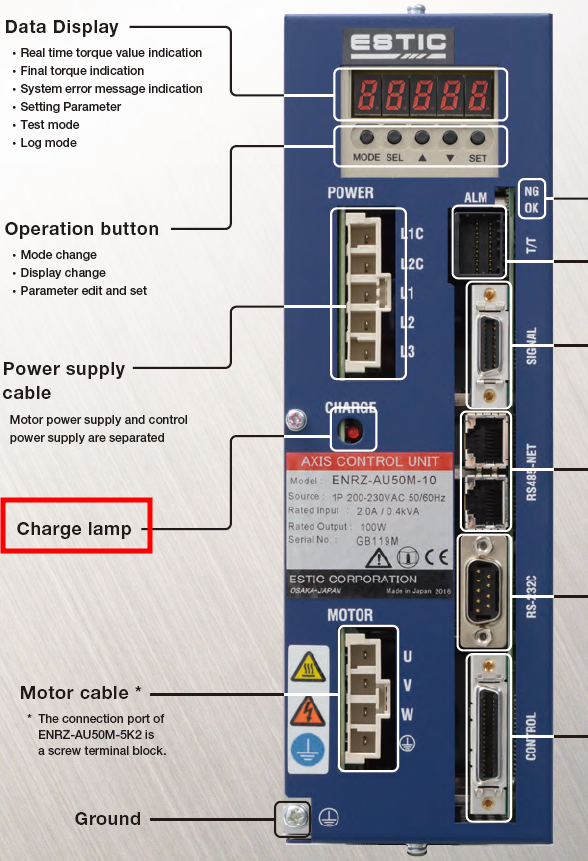
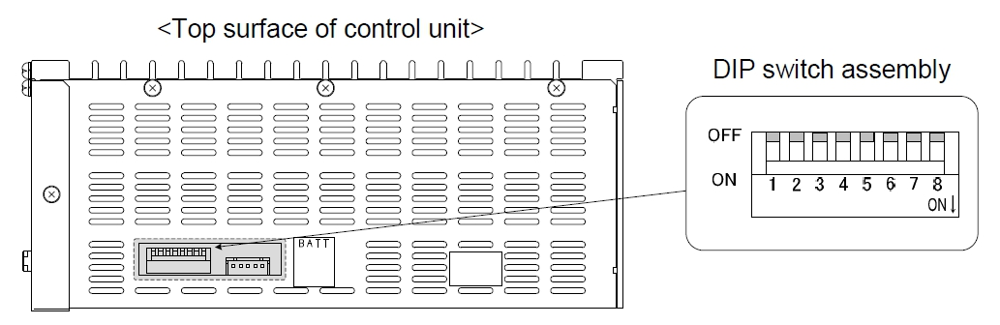
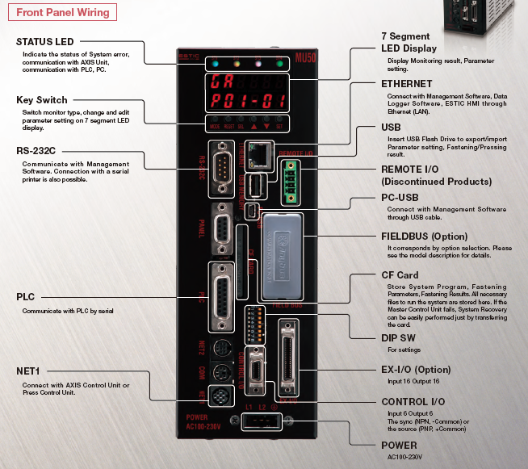

MAS/LOC 국 전환 (DIP스위치 1): 다축 시스템 사용 시 설정. 단독 사용 시 ON (MAS 국)으로 설정. (공장 출하: OFF (LOC 국))
설정값 보호 기능 (DIP스위치 2):ON 설정 시 MU50 패널에서의 주요 설정 및 초기화 실행 불가. (공장 출하: OFF (무효))
핫스와핑 기능 (DIP스위치 3):ON 설정 시 핫스와핑 기능 유효 (펌웨어 Ver.AA1400 이상). (공장 출하: OFF (무효))
모터센서 사양 전환 (DIP스위치 9): 레졸버 또는 엔코더 선택. ON (레졸버), OFF (엔코더). 주의: 설정을 잘못하면 시스템 에러 발생! (공장 출하: ON (레졸버))
배선 및 연결
접지:감전 방지를 위해 보호 접지 단자를 제어반의 보호 접지와 반드시 연결. 권장: 제3종 접지 (100Ω 이하).
제어 전원: 단상 AC200~230V±10% (50/60Hz)를 L1C, L2C 단자에 연결.
동력 전원:
* AU50M-10 모델: L1, L2 (단상)
* AU50M-20, 40, 2K, 5K2 모델: L1, L2, L3 (삼상)
* 제어 전원과 주 전원은 별도 운용 가능하며, 주 전원은 제어 전원과 동시에 또는 그 이후에 입력해야 함. 확인 사항: 반드시 “CHARGE”부에 빨강색 점등 확인.

팬 구동용 전원 (AU50M-2K 전용): 과열 방지를 위해 DC24V 5W 팬 구동용 전원 커넥터 연결 필수.
NET 케이블 (RS485-NET): 다축 제어 시 AXIS 컨트롤 유닛 간 연결. 연결되지 않은 커넥터에는 반드시 종단저항(ENRZ-CVST3) 장착.
케이블 배치/노이즈 대책: 너트러너 케이블은 가능한 짧게 선정. 토크 트랜스듀서 및 레졸버 케이블은 **모터 케이블과 별도로 배선 (30cm 이상 이격 또는 금속 벽 삽입)** 권장. 중계 케이블은 1개 이상 사용 금지.
백업 배터리: 시스템 달력 기능(날짜/시간)을 위해 옵션 배터리(ENRZ-BATT) 장착. 2년마다 교체 권장.
2. 마스터 제어 유닛 (ENRZ-MU50) 제품 설치 주의사항
DIP 스위치 설정

CC-Link 리셋 설정 (SW1): (공장 출하: OFF)
FROM 설정 값 우선(CF카드보다 우선) 설정 (SW2): (공장 출하: OFF)
AU 각 축 체결 결과 NG 출력 설정 (SW4):ON 설정 시 작동하지 않거나 축 절단된 축의 체결 완료 및 NG 출력이 무효화됨 (Ver.MA1240 이상). (공장 출하: OFF (유효))
설정 보호기능 (SW8):ON 설정 시 MU50 패널에서 주요 설정 및 초기화 실행 불가. PC50/DP50을 통한 설정 변경은 보호되지 않음 (Ver.MA1380 이상).
FIELDBUS 1BYTE 출력 설정 (SW6): 데이터 출력시 글자 깨짐 발생 시 ON하여 시도할 것. (공장 출하: OFF)
배선 및 연결

접지: MU50은 반드시 접지해야 함.
전원 공급: AC100~230V±10% (50/60Hz)를 POWER 커넥터에 연결.
CONTROL I/O 커넥터: 외부 제어 기기와 연결 (싱크/소스 방식 모두 지원).
NET1 커넥터: MU50과 AU50/SPU50 간 연결.
FIELDBUS 포트 (있을 경우): 필드버스 유형(DeviceNet, CC-Link 등)에 따라 노드 주소 및 통신 속도 설정 필수.
CF 카드: 메인 메모리 역할. 지정된 CF 카드만 사용해야 하며, 파일 쓰기 중 전원 차단 시 고장나므로 (CF 카드 이상) 주의.
USB 메모리 포트: 외부 저장 장치 연결. FAT32 형식, USB 2.0/TYPE-A 호환.
RS-232C (SERIAL 포트): PC 또는 프린터 연결 (당사 순정품 사용 혹은 실드 처리된 크로스 케이블을 배선하여 사용; 매뉴얼 참조). RS-422와 동시 사용 불가.
ETHERNET 포트: PC(PC50) 연결. CAT.5E 등급 이상 LAN 케이블 및 FA용 스위칭 허브 권장. RJ45 표준 커넥터 사용.
케이블 및 노이즈 대책: 통신선은 짧게 유지. 다른 동력선이나 에어 호스와 별도 계통으로 배선하거나 차폐판 설치하여 노이즈로 인한 시스템 에러 방지.